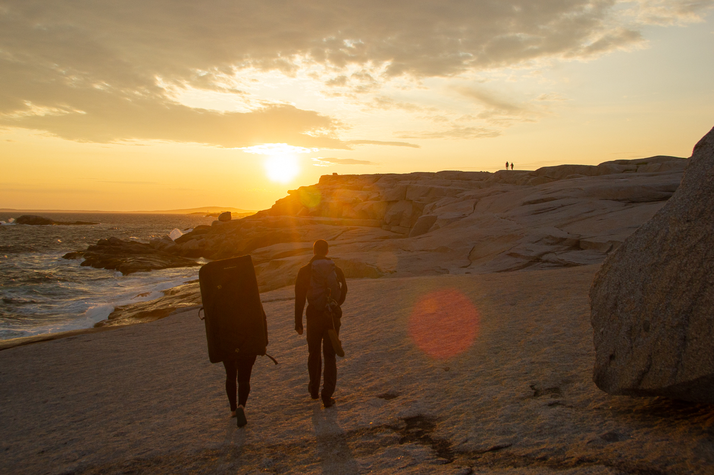
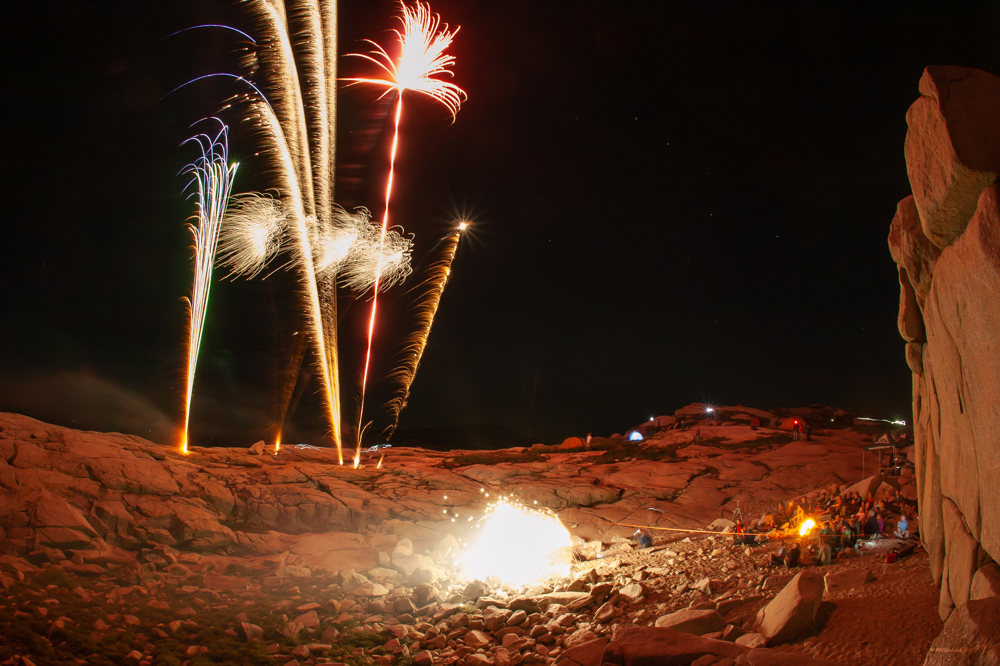

Portfolio

Image Interpretation and Analysis of Salt Diapirism and Associated Alluvial Fans, Fars Province, Southern Iran
Southern Iran is characterised by a regional fold belt forming the southern extension of the Zagros Mountains. This folding and the local arid environment allow salt diapers to reach the surface and commonly for salt glaciers. Our initial efforts were to isolate the salt diapers and salt glaciers from surrounding landforms and rock types by using the multi-spectral imagery from the Sentinel-2 satellite operated by the Copernicus Programme of the European Space Agency.
View PDFTofino, BC Location Analysis of a Hypothetical Eco-Resort
A location analysis of a hypothetical Eco-resort near Tofino, BC using ModelBuilder in ArcGIS Pro. A power point walking through each of the 10 layers and reasoning behind them.
View PresentationAPSP optimising the Floyd-Warshall algorithm for Archaeology and implementing on massive datasets
Using variations on pathfinding to simulate ancient travel routes has been a practice in archaeology of more than a decade. Here we implement the Floyd-Warshall algorithm on an 11-million point raster though tiling and recombining to approximate a full computation of an unfeasibly large raster.
View PresentationPhotography
I have, for a number of years, dabbled in photography with some success. There are a lot of skills which cross over to data analytics, ranging from optics in remote sensing to image processing and data management. Soft skills, of patients, meticulous planning, pivoting to capture opportunity, and adaptability,


